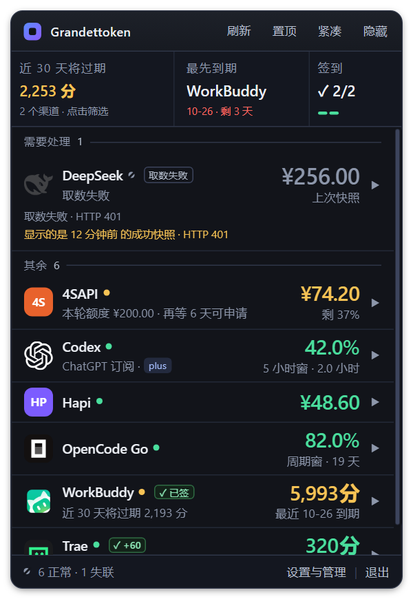

这一轮不新增渠道、不改数据口径、不放大窗口。只做四件事：降噪、立序、加质感、顺手感。 核心判断是——现在的界面不是“信息不够”，而是“每个元素都在同时说话”。当所有大数字都染上状态色， 颜色就不再是信号；当字号有 9 档、每档只差 0.5px，层级就不再可读。
下面这张是当前版本的真实截图（6 个渠道、含 1 个失联、1 个限流）。功能都对，问题在视觉权重： 眼睛第一眼看到的是“一排彩色数字”，而不是“哪一个真的需要处理”。

1 2 3 4 5 6| 问题 | 用户实际感受 | 设计对策 |
|---|---|---|
| 颜色过载7 行里 5 行有大面积彩色数字 | “看起来一直在报警，但其实只有两个真有事。” | 健康数值回到主文字色；状态色只留给 warn / bad / 失联，并用左侧 2px 状态轨 + 浅色底强调。 |
| 层级过密9 档字号 + 6 种灰 | “盯着看才分得清哪个是标题、哪个是说明。” | 收敛到 5 档字号 + 4 级文字色；说明文字只降一级，不再用 0.5px 玩微差。 |
| 结构平摘要、分组、底栏都是同一套横条节奏 | “像一张 Excel，不像一个挂件。” | 摘要改为“英雄数字 + 风险卡 + 签到微件”；底栏变成可点的状态过滤器；展开区做成内嵌仪表卡。 |
| 重复表达失败原因出现 2–3 次 | “行被撑高了，反而更难扫。” | 一处说结论（状态标签）、一处说原因（副标题）、一处说时间（右侧口径），每处只说一次。 |
像一块好的仪表盘：平时安静，出事时一眼看见。三条原则，按优先级排列：
健康 = 主文字色 + 一枚小绿点。只有 warn / bad / 失联才配拥有颜色。 颜色出现得越少，出现时越有分量。
用一套专门的展示数字字体（Segoe UI Variable Display）， 24–26px、负字距、等宽数字；标签退到 10.5px 并提高字距。先看到数，再看到解释。
摘要、分组、行、展开卡各自有清楚的边界与 8px 节奏。 状态不只靠颜色：左侧竖轨、文字标签、点状/斜线/空心三种形状同时存在。
现有 :root 只有颜色变量，字号与间距散落在 CSS/JS 内联样式里。这一轮先把令牌补齐，
后续改版只动一处。颜色沿用既有色相，整体降低一点饱和度、拉开表面层级。
状态色纪律（最重要的一条）：大数字默认使用 --text。只有以下三类允许染色：
| 场景 | 数值颜色 | 辅助通道 |
|---|---|---|
| 正常 / 宽裕 | --text | 小绿点 + 灰色进度；不额外强调 |
| 预警 | --warn | 2px 琥珀左轨 + 浅琥珀底 + 文字标签（如“低于底线”） |
| 告急 / 限流 | --bad | 2px 红左轨 + 浅红底 + “限流”标签 |
| 失联 / 旧快照 | --text-3，数值前加 ~ | 灰斜线点 + “取数失败”标签 + 右侧显示快照年龄 |
| 未配置 | --text-4（——） | 空心灰环 → 语义是“没启用”，不是“坏了” |
text-3 #8A95A8 在 #0E1015 上约 6.3:1，小字达标；
text-4 只用于箭头、占位、装饰，不承载必须读到的信息。状态色同时保留文字标签，色盲用户不丢信息。
| 令牌 | 字号 / 行高 | 字重 | 用途 |
|---|---|---|---|
--fs-display | 26 / 1.05 | 650 | 摘要英雄数字、告急行大数字 |
--fs-value | 22 / 1.08 | 600 | 渠道行主数值 |
--fs-body | 13 / 1.45 | 500–600 | 渠道名、设置项标题 |
--fs-meta | 11.5 / 1.5 | 400–500 | 副标题、说明文字 |
--fs-caption | 10.5 / 1.4 | 600 + 0.08em 字距 | 分组标签、口径、列标题 |
数字统一 font-variant-numeric: tabular-nums + letter-spacing:-.02em，
字体栈优先 "Segoe UI Variable Display"（Windows 11 自带），回落 Segoe UI。
中文正文仍用 "Microsoft YaHei UI"，最小 10.5px。
0 2px 8px -2px rgba(0,0,0,.6)；E2/E3 只用于卡片内部的展开区与弹层。
左右同宽对比：左边是现状，右边是提案。请重点看三处——标题栏只剩一个高频动作、摘要条的风险格不再截断、 大数字里只有两个还带颜色。
刷新是唯一的高频动作，留在明面；置顶、紧凑条、隐藏到托盘都是低频窗口动作，收进 ⋯ 菜单。
“设置与管理”仍然只保留底栏一个入口（沿用 2026-10-20 的收敛裁决），菜单里不出现设置项。
保留四个文字按钮，但收成一组：字号 11.5 → 11，间距 6px， 用 1px 分隔线分成“刷新｜置顶 紧凑 隐藏”，并给刷新一个强调色。 优点是零学习成本；缺点是 380px 下标题可用宽度仍然只有约 78px。
三格不再等宽：左边 1.45fr 给临期总量与 7 日到期分布，中间 1fr 单独成“风险卡”， 右边 66px 只放签到。风险格把渠道名与日期分两行，从结构上消除长名字被截断的问题。
| 元素 | 规格 | 数据纪律 |
|---|---|---|
| 临期总量 | 24px / 650；“分”12px text-3 | 只统计可确认的到期记录；明细未知时写“待确认”，不把未知当 0 |
| 7 日到期分布 | 10.5px；迷你柱 50×16 | 未来 7 天无到期时画虚线基线 + “暂无”，不画假柱子 |
| 最先到期 | 名称 11.5px；日期 17px；剩余天数 9.5px | 名称不截断，必要时换行；无到期时写“暂无临期”，不写 0 |
| 签到 | 17px 分数 + 3 段迷你条 | total=0 时显示“——”而不是 0/0；完成后保留 ✓ 形态 |
健康行 48px、告急行 56px。行内固定三块：身份（图标 + 名称 + 状态点 + 标签）、解释（一行副标题）、 数值（主数值 + 口径）。多出来的信息一律进展开区。
六种状态并排。注意：颜色只出现在需要处理的两行；正常行的数值是白色的，绿点与灰色辅助信息已经足够表达“正常”。
| 位置 | 只写什么 | 不写什么 |
|---|---|---|
| 状态标签 | 结论：限流 / 低于底线 / 取数失败 / 已签 / plus | 不写原因，不写时间 |
| 副标题 | 原因或口径：HTTP 401 / 5 小时窗 · 2.0 小时后恢复 / 12 天后可申请 | 不重复结论，不重复右侧数字 |
| 右侧口径 | 数值的解释：周期窗 / 剩余 24% / 12 分钟前快照 | 不写长句；超过 12 字进展开区 |
| 展开区 | 完整重置时间、逐笔到期、变动台账、图表 | 不重复收起行已有的结论 |
没有官方标的渠道，兜底块改成“品牌色 12% 底 + 2 位大写字母 + 1px 内描边”，字母颜色用品牌色提亮，
不再出现小写 x。字母优先取 short，缺失时取名称首两个汉字/字母；永远不使用关闭符号
× / x 作为兜底。
展开区不再整行铺底色，而是一张内嵌卡（356px = 380 − 左右 12px）。固定五段： 核心三数 → 走势 → 口径 → 变动 → 动作。每段只承担一种信息，段与段之间用 12px 与一条极淡的分割线。
channel_changes 聚合出“近 7 天消耗”柱图，
而不是余额折线；24 小时 / 7 天 / 30 天 / 3 月 / 12 月的区间切换需要新的历史查询，留待后续。
柱图标题与空日都如实标注“推算 / 无记录”。
.rbody 内部，卡片圆角与阴影不随滚动裁切。
紧凑条、胶囊、贴边不重新发明一套视觉，只沿用“中性数值 + 风险着色 + 2px 状态轨/点”。
~ 同义。当前 380px 里塞 7 个页签，特大字号下每个只剩约 48px，“刷新与启动”必然被截。 目标方案把设置首页改成索引列表：每行一个分区、一行摘要、一个箭头；点进去才是表单页。 这同时解决了页签溢出、每页只有 480px 可滚动高度、以及“不知道该去哪”的三个问题。
Esc 逐级返回。| 场景 | 行为 | 反馈 |
|---|---|---|
| 行 hover | 整行浅色抬升，箭头右移 1px、变成 text-2 | 120ms；不位移整行，避免列表抖动 |
| 行点击 | 单开；再点收起；自动滚到完整可见 | 展开 280ms，箭头 90°；焦点留在行头 |
| 刷新 | 图标变成 16px 进度环，真实请求结束才停 | 完成后图标短暂变 ✓ 800ms；变化行扫一道 5% 微光 |
| ⋯ 菜单 | 置顶 / 紧凑条 / 隐藏 / 退出 | 120ms 淡入；Esc / 点外部关闭；方向键切换 |
| 底栏状态 | 点“6 / 2 / 1”按状态过滤；再点取消 | 选中项加 accent 底；列表即时过滤，不重新取数 |
| 键盘 | ↑↓ 移动行焦点，Enter 展开，R 刷新，Esc 逐层退 | 焦点环 2px accent；不改变既有 Tab 顺序 |
| 设置索引 | 点行进入子页；返回回索引；Esc 回面板 | 120ms 淡入 + 6px 上浮；返回保留滚动位置 |
| 令牌 | 值 | 用途 |
|---|---|---|
--dur-1 | 120ms | hover / press / 菜单 / 焦点 |
--dur-2 | 200ms | 淡入 / 数字滚动 / 表单切换 |
--dur-3 | 280ms | 行展开 / 面板入场 |
--ease-out | cubic-bezier(.16,1,.3,1) | 进入 / 展开：快起慢停 |
--ease-soft | cubic-bezier(.4,0,.2,1) | 颜色 / 透明度 |
transform / opacity；不回弹；无常驻循环
（告急呼吸仍默认关）；prefers-reduced-motion 下全部压到 0.01ms。
点刷新 → 图标收成进度环 → 取数期间不重复触发；完成的瞬间，只有值变了的行扫过 5% 微光。
新值从下方 6px 淡入，旧值幽灵上移淡出，200ms；值没变就不播。
某渠道跌破红线：左轨从 0 长到 2px、底色淡入 200ms、数值变 red 200ms；状态点只播一次 1.2s 红晕，不循环。
点击行 → 卡片从 0fr 到 1fr，280ms；内容在 60ms 后淡入上浮 4px；箭头同步转 90°。
180ms 收回；折叠后用 visibility:hidden 延迟切换，Tab 不会落进看不见的按钮。
建议分三批。第一批只改视觉与文案，不动 DOM 结构，风险最低、用户当天就能感知；第二批才动标题栏、展开卡和设置导航。
这七条全部是“呈现层”改动，不碰取数、排序、阈值与存储。用户感知最强：
界面立刻从“彩色报表”变成“安静仪表”。预计 1–2 天，回归范围集中在
renderRow / renderRiskBand / styles.css。
| 文件 / 脚本 | 原因 |
|---|---|
build/jsdom-smoke.js | 常驻文案预算、设置页字数、行结构断言；改文案后需同步期望值 |
build/visual-forms.js | 三档字号 × 形态的越界检查；行高、摘要高度变化后需重跑 |
build/verify-ui-0923.js / verify-focus-ring.js | 动效与焦点环断言 |
build/verify-form.js | 固定窗口尺寸与形态切换；本轮不改尺寸，应保持全绿 |
| README / docs/assets 截图 | 面板结构变化后需要重新截图，避免公开门面与实现不一致 |
:root{
/* 表面 */
--bg:#0e1015; --bg2:#141821; --bg3:#191e27; --bg4:#212836;
--line:#252b38; --line-soft:#1b212b; --line-strong:#343d4f;
/* 文字 */
--tx:#f3f6fb; --tx2:#b7c0d0; --tx3:#8a95a8; --tx4:#5e6a7e;
/* 状态（只用于状态，不用于装饰） */
--ok:#4fd6a0; --warn:#f3c666; --bad:#ff7b72; --ac:#8aa4ff;
--ok-bg:rgba(79,214,160,.09);
--warn-bg:rgba(243,198,102,.09);
--bad-bg:rgba(255,123,114,.08);
/* 字号 / 行高 */
--fs-display:calc(26px*var(--u)); --lh-display:1.05;
--fs-value:calc(22px*var(--u)); --lh-value:1.08;
--fs-body:calc(13px*var(--u)); --lh-body:1.45;
--fs-meta:max(11.5px,calc(11.5px*var(--u))); --lh-meta:1.5;
--fs-cap:max(10.5px,calc(10.5px*var(--u))); --lh-cap:1.4;
/* 圆角 / 间距 */
--r-panel:12px; --r-card:10px; --r-ctl:8px; --r-chip:6px; --r-tag:4px;
--sp-1:4px; --sp-2:6px; --sp-3:8px; --sp-4:12px; --sp-5:16px; --sp-6:24px;
/* 动效 */
--dur-1:120ms; --dur-2:200ms; --dur-3:280ms;
--ease-out:cubic-bezier(.16,1,.3,1);
--ease-soft:cubic-bezier(.4,0,.2,1);
}迁移顺序：先把新令牌追加到 :root（旧变量保留，避免一次性改爆）；
再逐块替换字号与颜色；最后删除旧值。状态色从 JS 内联样式迁到语义类
.t-ok / .t-warn / .t-bad / .t-off，JS 只负责加类名。
配套文档：DESIGN.md（产品设计基线） · PROGRESS.md（实现进展） · 行详情五段骨架 · Codex 周优先。 本稿所有数字均为模拟数据，仅用于设计评审。